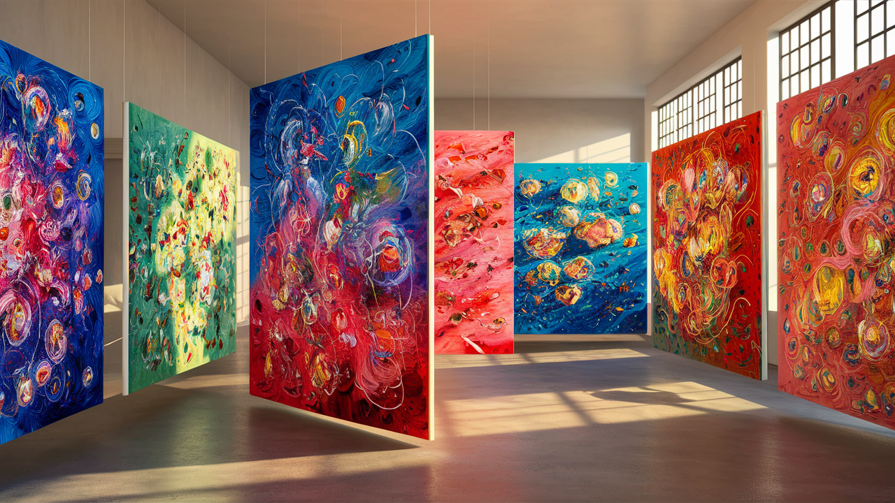

Galería de Artes "Destellos de colores"
Ubicada en Santiago de chile, donde la riqueza cultural y la creatividad se encuentran, te damos la bienvenida a Destello de Colores, una galería de artes que celebra la diversidad y el talento artístico de nuestro país. Sumérgete en un mundo de expresión y belleza, donde cada obra cuenta una historia única y cada color despierta emociones profundas.
Nuestra galería presenta una colección variada de pinturas, esculturas, colores y arte digital, creadas por talentosos artistas locales e internacionales. Desde las vibrantes obras abstractas hasta las piezas que capturan la esencia de la naturaleza chilena, en Destellos de Colores encontrarás una experiencia artística que te inspirará y te cautivará.
